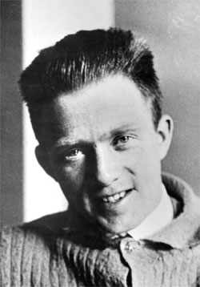

In the previous chapter we saw that pressure in a star keeps it from collapsing, and this is either generated by thermal energy in collapsing protostars, or by nuclear fusion in stars.
We saw that however, when the fuel runs out in stars, these collapse and become white dwarfs, neutron stars or black holes, depending on their initial masses.
ZAMS mass
Collapsing mass
Fate
\(\lesssim 8\,M_\odot\)
\(1.4\,M_\odot\)
White Dwarf
\(8 - 25 M_\odot\)
1.4 - 3 \(M_\odot\)
Neutron Star
\(\gtrsim 25 M_\odot\)
\(\gtrsim 3 M_\odot\)
Black Hole
What keeps a White Dwarf star or Neutron Star from collapsing due to gravity?
Remember that no further energy can be obtained from nuclear fusion!
8.1.1 Example: White Dwarf stars
The typical size of the collapsed core is \(\sim R_{\oplus}\)
Let’s find out the density of a white dwarf, knowing that its mass is \(\sim 1.4M_\odot\), and compare it to the density of the Sun
Code
import mathfrom scipy.constants import piRearth =5371E3#mMsun =1.989E30#kgRsun =696340E3#mVsun =4/3*pi*Rsun**3#m^3rhosun = Msun/Vsun #kg/m^3Mwd =1.4*Msun #kgRwd = RearthVwd =4/3*pi*Rwd**3#m^3rhowd = Mwd/Vwd #kg/m^3print(f"The density of a white dwarf is = {rhowd:1.4} kg/m^3.")print(f"The density of the Sun is = {rhosun:1.4} kg/m^3.")
The density of a white dwarf is = 4.291e+09 kg/m^3.
The density of the Sun is = 1.406e+03 kg/m^3.
We find that the average density of a white dwarf is \(\sim 10^9\mathrm{kg/m^3}\).
Compared to the density of the Sun, this is \(>4\times 10^{6}\) higher!
What are the implications of such a high density?
Acceleration due to gravity at the surface of a White Dwarf is \(\sim 5\times 10^{6}\,\mathrm{m s}^{-2}\).
A teaspoon of White Dwarf material would weigh the equivalent of 16 tons! - As a reference, on Earth, the densest known material is Osmium, which has the equivalent of more than 100 grams in a teaspoon.
In the gravitational field of the white dwarf it would be \(8\times 10^{6}\) tons!
8.2 Degenerate Matter
8.2.1 Key players - 1926
Wolfgang Pauli: Nobel prize 1945, “Not even wrong”.
Sir Ralph Howard Fowler: Paul Dirac’s PhD supervsior (Dirac and Schrodinger Nobel Prize 1933).

Werner Karl Heisenberg: Nobel prize 1932.
8.2.2 The Pauli exclusion principle
Allows at most one fermion (particle with 1/2 integer spin), such as an electron or neutron, to occupy a given quantum state since no two fermions can have the same set of quantum numbers.
This means that in an electronic energy level we can have two fermions, but with opposite spins (different spin quantum numbers), as shown in Figure 8.1.
At zero temperature, all of the lower energy states and none of the higher states are occupied: completely degenerate matter (see Figure 8.1).
The Fermi energy is the energy of the last occupied state.
Electron gas begins to become degenerate when the density is of the order \(10^7\) kg m\(^{-3}\).
Figure 8.1: Occupation of the orbital levels of an atom at zero and final temperature. According to the Pauli exclusion principle, only two electrons with opposite spin can be in the same orbital.
8.2.3 The Heisenberg uncertainty principle
The Heisenberg uncertainty principle states that we cannot measure with infinite precision both position and momentum at the same time.
If \(\Delta x\) and \(\Delta p\) are respectively the uncertainties on position and momentum, these are related by the relation \[
\Delta x\Delta p_x \approx \hbar\nonumber.
\tag{8.1}\]
This means that a particle confined to a smaller and smaller volume of space will have a corresponding larger and larger uncertainty in its momentum.
Note that \(\hbar=1.055\times 10^{-34}\mathrm{J\, s}\) is the reduced Planck’s constant, which is the Planck’s constant \((h=6.626\times 10^{-34} \mathrm{J\, s})\) divided by \(2\pi\).
Figure 8.2: You cannot fine Heisenberg…
Figure 8.3: It looks like physicists really like jokes about quantum physics.
8.3 Degeneracy pressure
8.3.1 A simplified model
For simplicity, we consider a uniform spherical mass\(M\) of radius \(R\) and density \(\rho\):
From hydrostatic equilibrium (see Chapter 5) we know that the central pressure\(P_{\mathrm{c}}\) (the pressure of gravity), required to support a body against its own self-gravity, is given by \[
\begin{aligned}
P_c&=\frac{4 \pi}{3} G\rho^{2} \frac{R^{2}}{2} \\
&={\left(\frac{\pi}{6}\right)^{1/3}GM^{2/3}\rho^{4/3}},
\end{aligned}
\tag{8.3}\]
where we used the relation \(R^{2}=(M/(4/3)\pi\rho)^{2/3}\) derived from Equation 9.4.
In the stellar remnant, this pressure of gravity must be balanced by the cold pressure, which we call degeneracy pressure.
Degeneracy pressure is the pressure exerted by fermions squeezed into a small box (like the remnant of a star), and it is what keeps cold stars from collapsing.
This is fundamentally a quantum mechanical concept.
Figure 8.4: Central pressure as a function of the density.
As the density of the stellar remnant increases, the central pressure due to self-gravity \(P_{\mathrm{c}}\) rises with density as \(\rho^{4/3}\).
The degeneracy pressure will only be able to balance this central pressure if it also increases with density, and does so faster than \(\rho^{4/3}\).
8.3.2 Derivation of the degeneracy pressure
Box of particles of gas.
Let us consider a cubic metre of particles composed of free electrons and protons (i.e. not bound together in atoms) with mass \(m_e\) and \(m_p\) respectively. These each have a number density \(n_e\) and \(n_p,\) and since there is charge-balance, \(n_e = n_p =n\). Therefore \[
\rho=n_e m_e + n_p m_p \approx nm_p
\tag{8.4}\] since \(m_{\mathrm{e}}\ll m_{\mathrm{p}}\).
The number density is \(n\), so this cube contains \(n\) particles.
The particles must maintain their identities as different particles: the uncertainty in their positions cannot be larger than their physical separation.
If the typical spacing between each particle is \(\Delta x\), then each particle typically ‘occupies’ a volume of \(\langle V\rangle=(\Delta x)^{3}\), and
\[
\begin{aligned}
\Delta x &= \frac{1}{n^{1/3}}, \\
n &= 1/{\langle V\rangle}.
\end{aligned}
\tag{8.5}\]
Therefore, by the Heisenberg Uncertainty Principle (note that this is an oversimplification and an approximation here), each particle has a momentum in the \(x\)-direction of \[
p_{x}\approx \Delta p_x \approx \frac{\hbar}{\Delta x}\approx\hbar n^{1/3}\approx\hbar\left(\frac{\rho}{m_{\mathrm{p}}}\right)^{1/3},
\tag{8.6}\] where we used Equation 8.4 for \(n\).
For non-relativistic particles (i.e. particle speed \(v\ll c\)), the average kinetic energy of the particle is given by \[
\langle E_k \rangle = \frac{1}{2}m\langle v^{2}\rangle
=\frac{\langle mv\rangle ^{2}}{2m}=\frac{\langle p^{2}\rangle
}{2m}=\frac{3\langle p_{x}^{2}\rangle }{2m},
\tag{8.7}\]
where the non-relativistic particle momentum is \(p=mv\) and \(\langle\ldots\rangle\) indicates an average. Also \(p^{2} = p_{x}^{2}+p_{y}^{2}+p_{z}^{2}\) therefore \(\langle p^{2}\rangle = 3\langle p_{x}^{2}\rangle\).
Plugging the result of Equation 8.6 in Equation 8.7, we find that the average quantum energy (or Fermi energy) of an electron is given by \[
{\langle E_e\rangle =
\frac{3\hbar^2}{2m_e}\left(\frac{\rho}{m_p}\right)^{2/3}},
\tag{8.8}\]
and analogously for a proton this is given by \[
{\langle E_p \rangle =
\frac{3\hbar^{2}}{2m_p}\left(\frac{\rho}{m_p}\right)^{2/3}}.
\tag{8.9}\]
Note some important properties of these equations:
They are only valid for non-relativistic particles.
Since \(m_e\ll m_p\), we see that \(\langle E_e\rangle \gg \langle E_p\rangle\) and we will show that electron pressure dominates over proton pressure for White Dwarf stars.
8.4 Pressure and kinetic energy
Figure 8.5: Box of particles of gas.
To find the degeneracy pressure, consider the work done by changing the size of one side of a box by an infinitesimal amount \(d x\), which changes the internal energy \[
dE = -F d x
\tag{8.10}\] By definition of pressure, since a force is applied over an area \(A\) (\(P=F/A\)), we can rewrite Equation 8.10 as \[
d E = - (P A) d x = -P d V,
\tag{8.11}\] where we introduced \(A d x = dV\), an infinitesimal change in the volume of the box.
Equation 8.11 can then be rewritten as \[
P = - \frac{d E}{d V}.
\tag{8.12}\]
Pressure is a measure of energy per volume.
Pressure is a macroscopic quantity, but we can relate it to the quantum mechanics of degeneracy pressure by considering the average kinetic energy per particle \(\langle E \rangle\) and volume per particle \(\langle V \rangle\). \[
P= -\frac{d \langle E \rangle}{d \langle V \rangle}
\tag{8.13}\] We can now use \[
{\langle V \rangle}^{-1}=\rho / m_p
\tag{8.14}\] to relate this to the particle energies \(\langle E_e \rangle\) and \(\langle E_p \rangle\).
8.4.1 For electrons
Using Equation 8.8, together with Equation 8.14, the average energy for electrons can be rewritten as \[
\langle E_e \rangle = \frac{3\hbar^2}{2m_e}\left(\frac{\rho}{m_p}\right)^{2/3} = \frac{3\hbar^2}{2m_e}{\langle V \rangle}^{-2/3}.
\tag{8.15}\] Therefore from the definition in Equation 8.13, the partial pressure\(P_{Qe}\) for electrons is \[
\begin{aligned}
P_{Qe}&= -\frac{3\hbar^2}{2m_e}\frac{d {\langle V \rangle}^{-2/3}}{d {\langle V \rangle}} \\
&= -\frac{3\hbar^2}{2m_e} \times -\frac{2}{3}{\langle V \rangle}^{-5/3} \\
&\approx \frac{\hbar^2}{m_e}\left(\frac{\rho}{m_p}\right)^{5/3}
\end{aligned}
\tag{8.16}\]
8.4.2 For protons
Analogously, using Equation 8.9, we can find the partial (quantum) pressure for protons: \[
\begin{aligned}
P_{Qp}\approx \frac{\hbar^2}{m_p}\left(\frac{\rho}{m_p}\right)^{5/3}.
\end{aligned}
\tag{8.17}\] In other words, we have
\[
P = \frac{2}{3}n\langle E \rangle.
\tag{8.18}\]
This derivation consisted in many approximations and some simplifications, but the full forms of the partial pressures have some prefactors:
\[
\begin{aligned}
P_{Qe}= \frac{\beta}{2}\frac{\hbar^2}{m_e}\left(\frac{\rho}{m_p}\right)^{5/3}, \quad \quad
P_{Qp}= \frac{\beta}{2}\frac{\hbar^2}{m_p}\left(\frac{\rho}{m_p}\right)^{5/3},
\end{aligned}
\tag{8.19}\] where \(\beta\) is dimensionless and of the order of unity.
8.4.3 Considerations
Note
\(T\) does not appear anywhere in either equation, implying that a finite temperature is not required to provide this source of pressure – it is indeed a cold pressure.
Note
Note also that the degeneracy pressure varies with density as \(\rho^{5/3}\). This is faster than self-gravity, for which \(P_{\mathrm{c}}\propto \rho^{4/3}\). So for some value of the density, the degeneracy pressure will become large enough to balance the central pressure due to self-gravity.
8.5 Visualising the pressure balance
A useful approach we can use is to take logs of our pressure equations such that, for the electron degeneracy pressure where \(P_{\mathrm{Qe}}\propto\rho^{5/3}\), we have \[
\begin{aligned}
\log(P_{\mathrm{Qe}}) &= \log(\rho^{5/3}) + \mathrm{constant}\\
&=\frac{5}{3}\log(\rho) + \mathrm{constant}.
\end{aligned}
\tag{8.20}\]
For the central pressure due to self-gravity, where \({P_{\mathrm{c}}\propto \rho^{4/3}M^{2/3}}\), we have \[
\begin{aligned}
\log(P_{\mathrm{c}}) &= \log(\rho^{4/3}) + \log(M^{2/3}) +
\mathrm{constant}\\
&=\frac{4}{3}\log(\rho) + \left(\frac{2}{3}\log(M) +
\mathrm{constant}\right).
\end{aligned}
\tag{8.21}\]
Figure 8.6: Logarithms of pressure vs the density for the degeneracy pressure (Equation 8.20) and for the central pressure, with different values of the stellar remnant mass (Equation 8.21).
The constant depends on the stellar remnant’s mass, hence the same slope but different intercepts.
For each mass a different value of \(\rho\) is needed to balance \(P_{\mathrm{c}}\).
Higher masses lead to higher central pressures which then require higher densities.